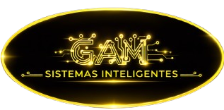

GAM Sistemas Inteligentes
Desarrollo de software enfocado en sistemas inteligentes que funcionan sin necesidad de conexión a internet,
diseñados según las necesidades específicas de cada cliente para automatizar, gestionar y optimizar sus procesos.
¿Quiénes somos?
Somos una firma tecnológica especializada en el desarrollo de sistemas inteligentes offline orientados a la
automatización, gestión y optimización de procesos.
Nuestro enfoque se basa en comprender a fondo cada necesidad para diseñar soluciones funcionales, eficientes
y adaptadas al entorno real de operación.
¿Qué hacemos?
- Desarrollo de software offline.
- Diseño de sistemas inteligentes personalizados.
- Automatización de procesos operativos.
- Optimización y gestión de flujos internos.
- Implementación de soluciones adaptadas a cada necesidad específica.
¿QUÉ OFRECEMOS?
- Sistemas inteligentes personalizados.
- Automatización de procesos operativos.
- Soluciones digitales funcionales con o sin internet.
- Control y gestión eficiente de información.
- Exportación de datos para análisis y respaldo.
- Software estable, autónomo y adaptado al entorno real del cliente.
¿QUÉ PROBLEMAS RESOLVEMOS?
- Desorganización operativa.
- Procesos manuales repetitivos.
- Errores en registros y control de datos.
- Falta de control en inventarios y operaciones.
- Baja eficiencia en procesos empresariales.
- Dependencia innecesaria de internet o plataformas complejas.
¿QUÉ NOS DIFERENCIA?
- Funcionan con o sin conexión a internet.
- Pago único, sin suscripciones mensuales.
- Soluciones personalizadas según necesidades reales.
- Sistemas prácticos, estables y fáciles de implementar.
- Enfoque en resultados operativos reales, no solo digitalización.
Nuestra filosofía
Cada sistema que desarrollamos parte de un análisis claro del problema. No ofrecemos soluciones genéricas.
Trabajamos bajo principios de eficiencia operativa, estabilidad, independencia de conexión a internet
y adaptación real al entorno del cliente.
Contacto